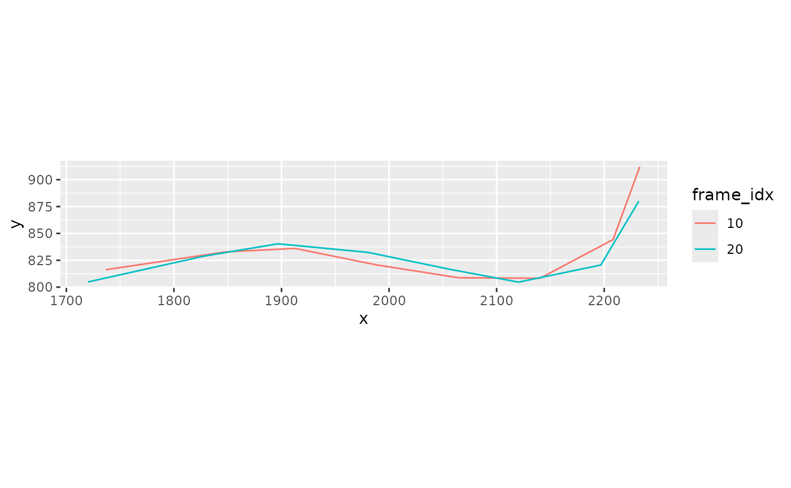
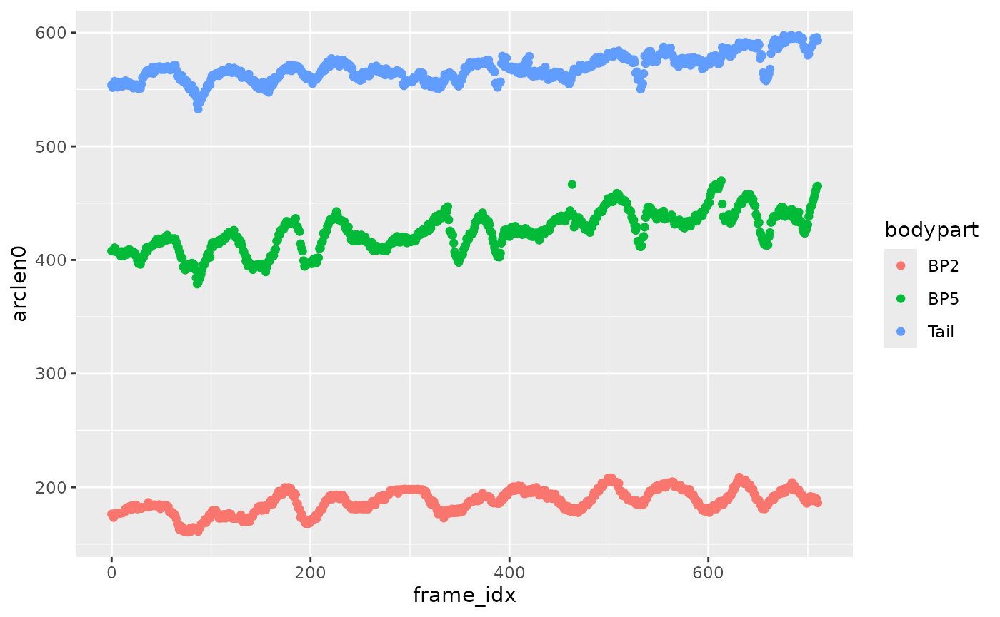
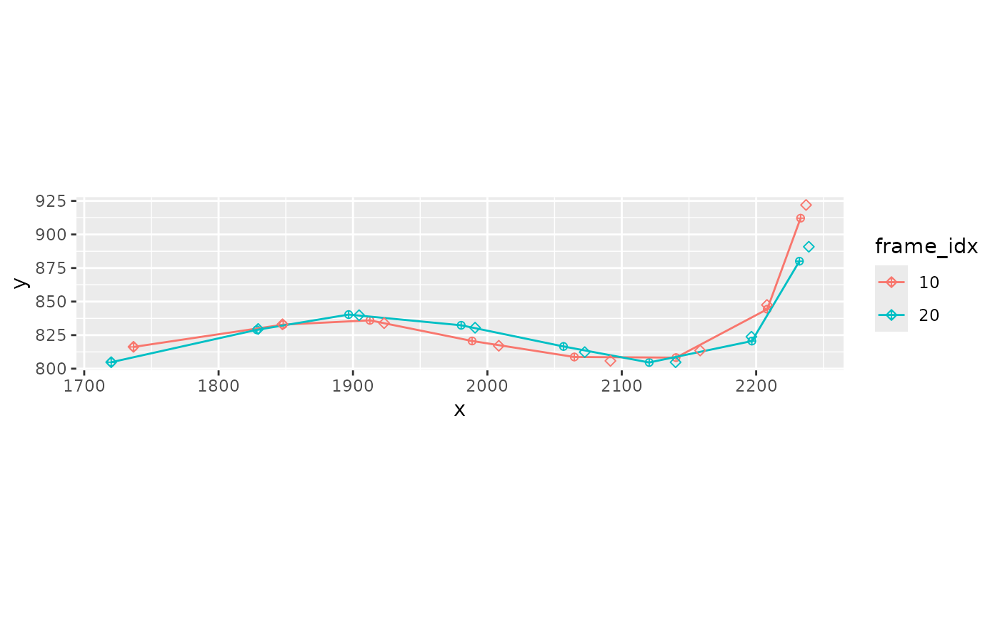
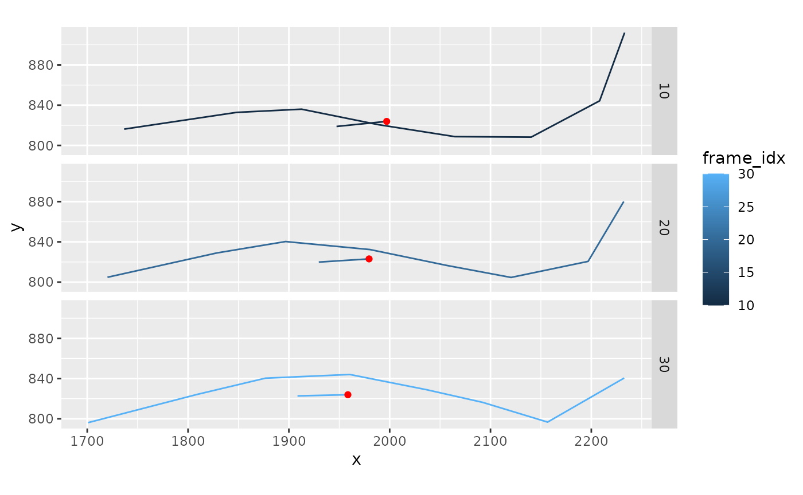

prickleback_swimming
prickleback_swimming.Rmd
library(fishmechr)
#> Warning: replacing previous import 'dplyr::filter' by 'gsignal::filter' when
#> loading 'fishmechr'
#> Warning: replacing previous import 'gsignal::conv' by 'pracma::conv' when
#> loading 'fishmechr'
#> Warning: replacing previous import 'gsignal::ifftshift' by 'pracma::ifftshift'
#> when loading 'fishmechr'
#> Warning: replacing previous import 'gsignal::findpeaks' by 'pracma::findpeaks'
#> when loading 'fishmechr'
#> Warning: replacing previous import 'gsignal::fftshift' by 'pracma::fftshift'
#> when loading 'fishmechr'
#> Warning: replacing previous import 'gsignal::ifft' by 'pracma::ifft' when
#> loading 'fishmechr'
#> Warning: replacing previous import 'gsignal::detrend' by 'pracma::detrend' when
#> loading 'fishmechr'
#>
#> Attaching package: 'fishmechr'
#> The following object is masked from 'package:stats':
#>
#> deriv
library(ggplot2)
library(tidyr)
library(dplyr)
#>
#> Attaching package: 'dplyr'
#> The following objects are masked from 'package:stats':
#>
#> filter, lag
#> The following objects are masked from 'package:base':
#>
#> intersect, setdiff, setequal, unionThis is an example of processing data from a swimming rock prickleback, Xiphister mucosus.
The data was tracked using Sleap (https://sleap.ai/) and comes out in the following
format. frame_idx is the frame number, and each point along
the body is identified with the point name and .x,
.y, the coordinate, and .score, which is a
measure of the estimated accuracy of the point. All of the points
together are also given a score (instance.score).
head(xmucosusdata)
#> # A tibble: 6 × 27
#> track frame_idx instance.score Snout.x Snout.y Snout.score BP1.x BP1.y
#> <lgl> <dbl> <dbl> <dbl> <dbl> <dbl> <dbl> <dbl>
#> 1 NA 0 6.08 1753. 821. 0.904 1864. 833.
#> 2 NA 1 6.07 1752. 821. 0.922 1861. 833.
#> 3 NA 2 6.07 1752. 821. 0.919 1860. 833.
#> 4 NA 3 6.06 1749. 821. 0.928 1857. 833.
#> 5 NA 4 6.09 1748. 821. 0.926 1857. 833.
#> 6 NA 5 6.01 1745. 820. 0.903 1856. 833.
#> # ℹ 19 more variables: BP1.score <dbl>, BP2.x <dbl>, BP2.y <dbl>,
#> # BP2.score <dbl>, BP3.x <dbl>, BP3.y <dbl>, BP3.score <dbl>, BP4.x <dbl>,
#> # BP4.y <dbl>, BP4.score <dbl>, BP5.x <dbl>, BP5.y <dbl>, BP5.score <dbl>,
#> # BP6.x <dbl>, BP6.y <dbl>, BP6.score <dbl>, Tail.x <dbl>, Tail.y <dbl>,
#> # Tail.score <dbl>Rearrange the data
We need to rearrange the data into “long” form, where the point names
are in a separate column, and we have single columns for the
x, y, and score values. The
function pivot_kinematics_longer is a convenience wrapper
for tidyr::pivot_longer that understands the format of
points from Sleap or DeepLabCut.
You need to pass in the names of your points (in order from head to tail) and the name of the column you want to put the point names in.
pointnames <- c("Snout", "BP1", "BP2", "BP3", "BP4", "BP5", "BP6", "Tail")
xmucosusdata <- xmucosusdata |>
pivot_kinematics_longer(pointnames = pointnames,
point_to = "bodypart")
head(xmucosusdata)
#> # A tibble: 6 × 7
#> track frame_idx instance.score bodypart x y score
#> <lgl> <dbl> <dbl> <fct> <dbl> <dbl> <dbl>
#> 1 NA 0 6.08 Snout 1753. 821. 0.904
#> 2 NA 0 6.08 BP1 1864. 833. 0.797
#> 3 NA 0 6.08 BP2 1928. 828. 0.677
#> 4 NA 0 6.08 BP3 2001. 813. 0.768
#> 5 NA 0 6.08 BP4 2081. 804. 0.603
#> 6 NA 0 6.08 BP5 2157. 816. 0.633Process the data
From here on out, the steps to process the data are quite similar to what is shown in the main vignette.
xmucosusdata |>
filter(frame_idx %in% c(10, 20)) |>
mutate(frame_idx = factor(frame_idx)) |>
ggplot(aes(x = x, y = y, color = frame_idx, group = frame_idx)) +
geom_path() +
coord_fixed()
Get arc length
xmucosusdata |>
ungroup() |>
filter(bodypart %in% c("BP2", "BP5", "Tail")) |>
ggplot(aes(x = frame_idx, y = arclen0, color = bodypart)) +
geom_point()
Interpolate to constant arc length
xmucosusdata <- xmucosusdata |>
interpolate_points_df(arclen0, x, y, spar = 0.2,
tailmethod = 'extrapolate',
.frame = frame_idx,
.point = bodypart,
.out = c(arclen='arclen', xs='x_s', ys='y_s'))
xmucosusdata |>
filter(frame_idx %in% c(10, 20)) |>
mutate(frame_idx = factor(frame_idx)) |>
ggplot(aes(x = x, y, color = frame_idx, group = frame_idx)) +
geom_point(shape = 10) +
geom_path() +
geom_point(aes(x = x_s, y = y_s), shape = 5) +
coord_fixed()
Interpolate the width
xmucosusdata <-
xmucosusdata |>
group_by(frame_idx) |>
mutate(width = interpolate_width(fishwidth$s, fishwidth$eelwidth, arclen))Get the center
xmucosusdata <-
xmucosusdata |>
get_midline_center_df(arclen, x_s,y_s, width=width,
.frame = frame_idx)
#> Estimating center of mass based on widthGet the swimming axis
xmucosusdata <-
xmucosusdata |>
mutate(x_ctr = x_s - xcom,
y_ctr = y_s - ycom,
t = frame_idx / 60) |>
get_primary_swimming_axis_df(t, x_ctr,y_ctr,
.frame = frame_idx,
.point = bodypart)
xmucosusdata |>
filter(frame_idx %in% c(10, 20, 30)) |>
ggplot(aes(x = x, y = y, color = frame_idx)) +
geom_path(aes(group = frame_idx)) +
geom_segment(data = ~ filter(.x, bodypart == "Tail"),
aes(x = xcom, y = ycom,
xend = xcom - 50*swimaxis_x,
yend = ycom - 50*swimaxis_y)) +
geom_point(data = ~ filter(.x, bodypart == "Tail"),
aes(x = xcom, y = ycom), color = 'red') +
facet_grid(frame_idx ~ .) +
coord_fixed()